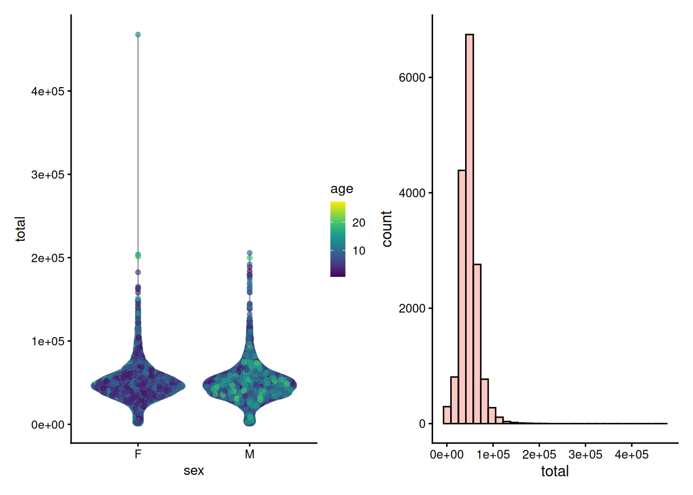
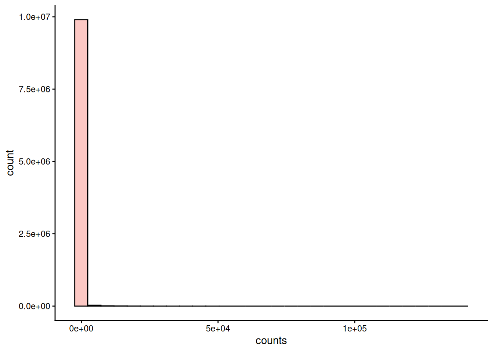
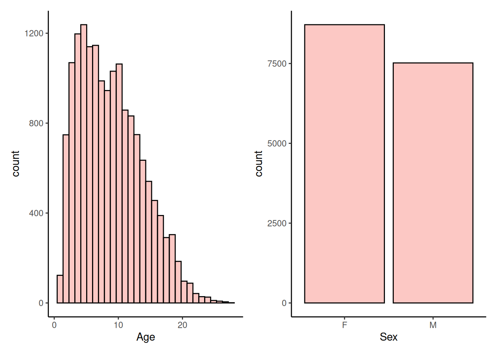
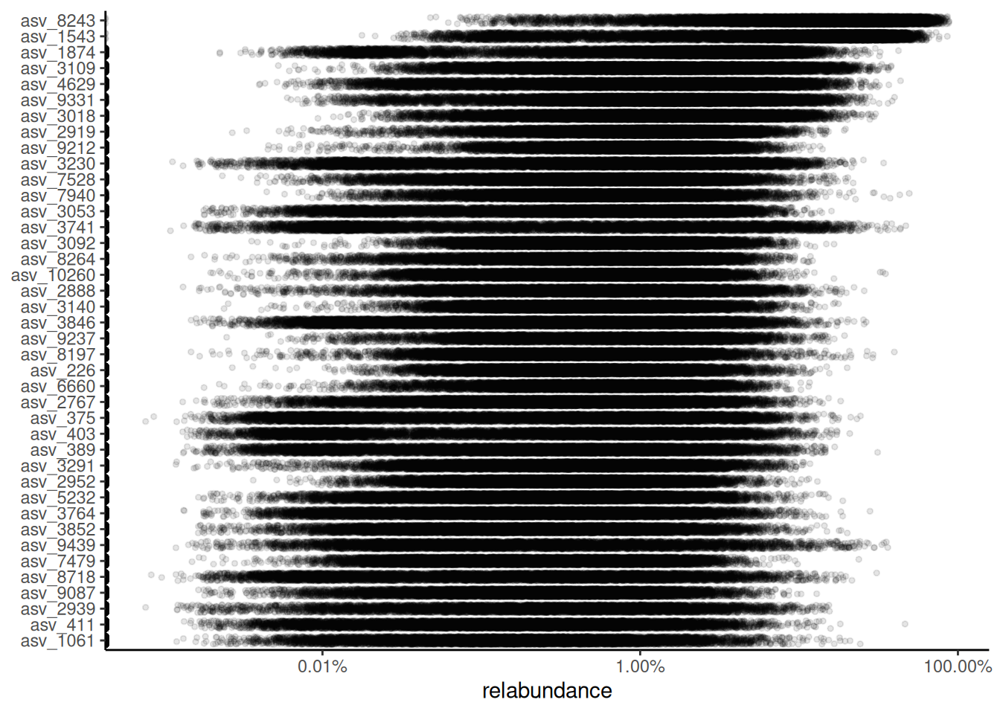
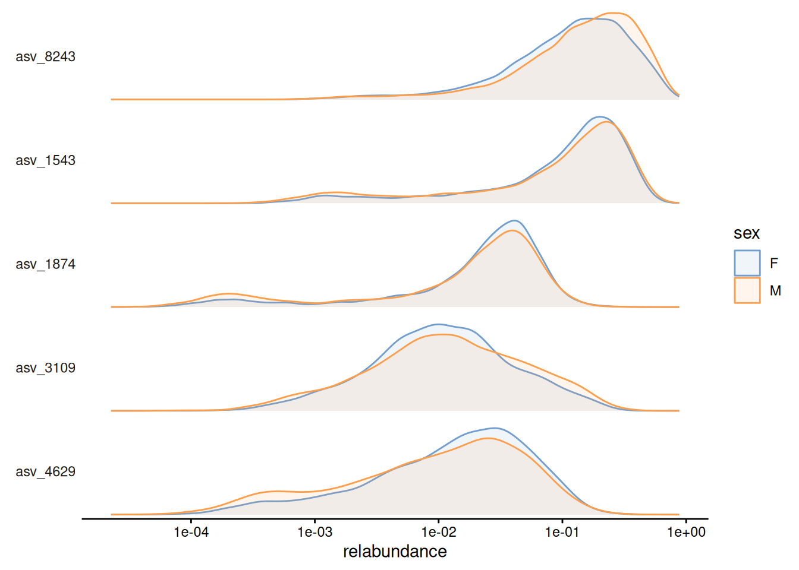
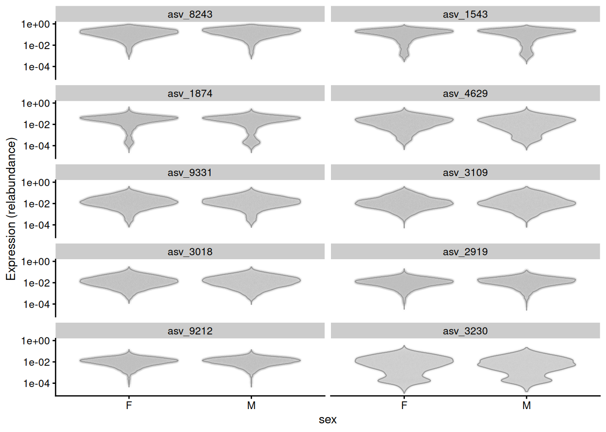
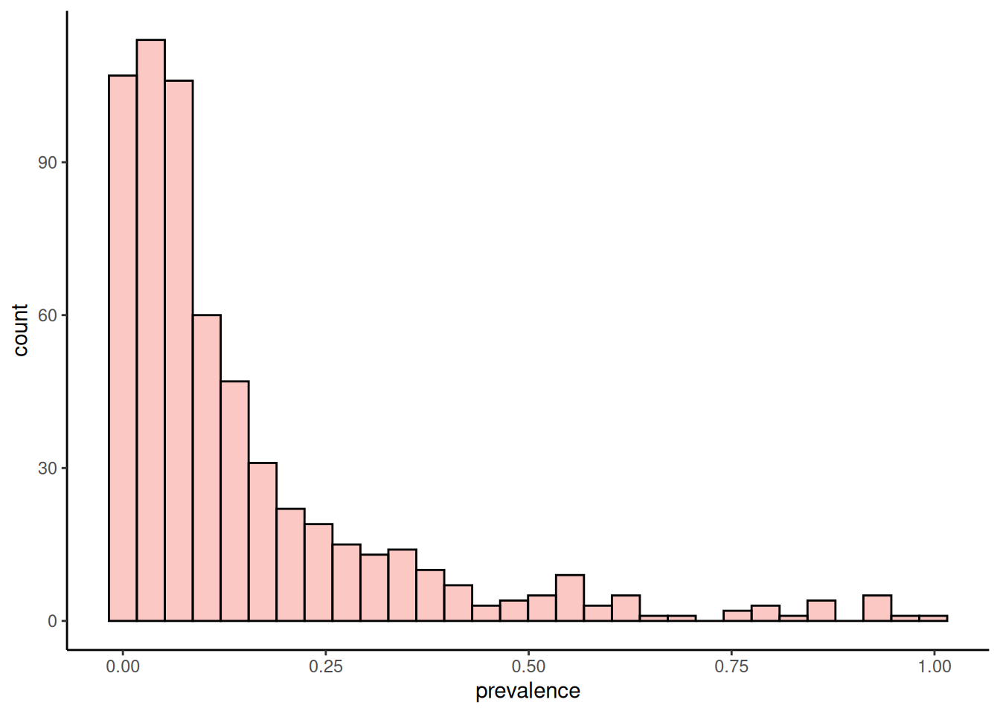
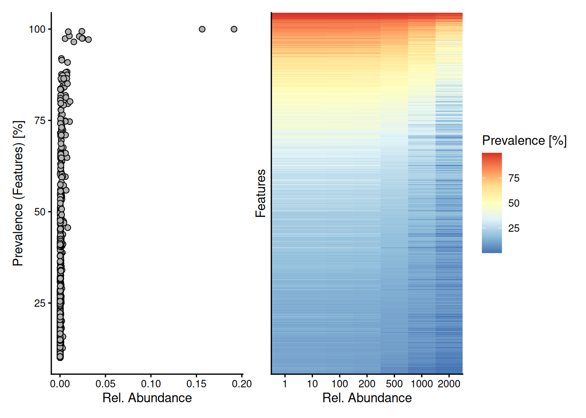
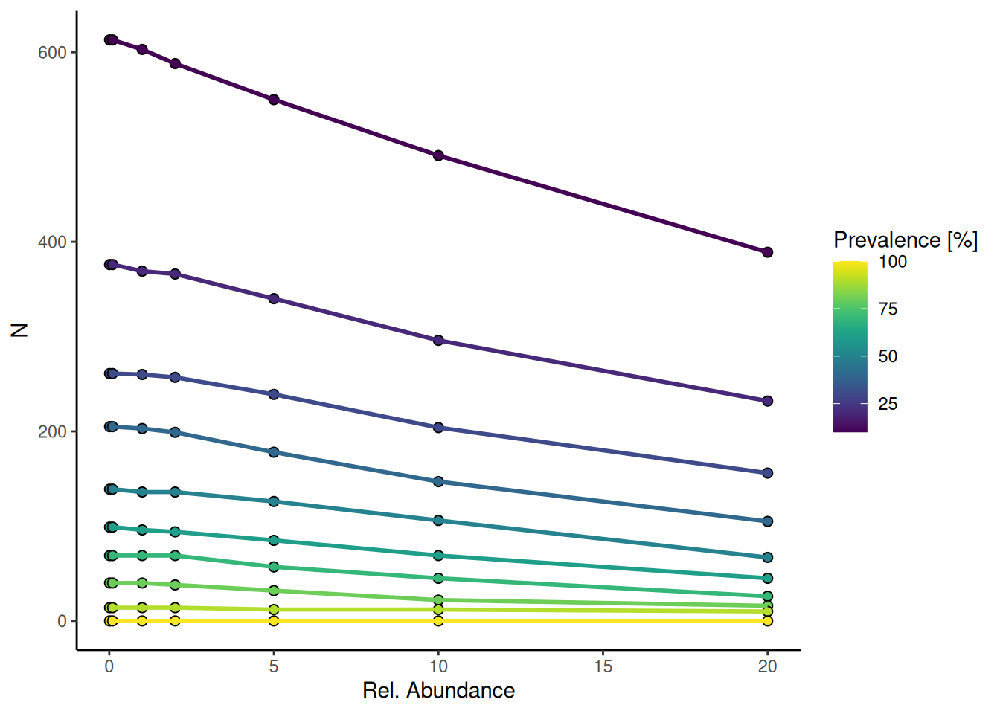
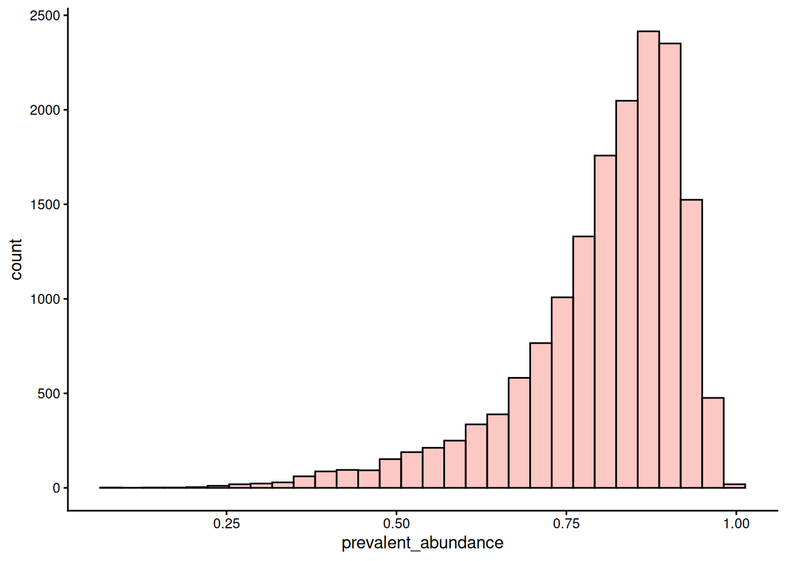

9 Exploration & quality control
This chapter focuses on the quality control (QC) and exploration of microbiome data and establishes commonly used descriptive summaries. Familiarizing yourself with the peculiarities of a given dataset is essential for data analysis and model building to make justified conclusions.
The dataset should not suffer from severe technical biases, and you should at least be aware of potential challenges, such as outliers, biases, unexpected patterns, and so forth. Standard summaries and visualizations can help, and the rest comes with experience. Moreover, exploration and QC often entail iterative processes.
There are available guidelines for QC, for instance, (Zuur, Ieno, and Elphick 2010). However, it should be noted that one should not follow any protocols strictly but rather use them as a template and customize them to one’s dataset. The goal of QC is not only to improve quality of data, but also to understand it and its limitations. Poor data quality leads to poor results which is illustrated by a common expression in computer science:
“Garbage in, garbage out”
Below we download a dataset from microbiomeDataSets. The dataset contains 16S data from the gut microbiome of baboons.
9.1 Summarize data
When you first get your hands dirty with the data, the first step is to summarize it and get a sense of what kind of data you’re dealing with. Printing TreeSE already provides useful information about the dataset’s dimensions, such as the number of samples and taxonomic features.
tse
## class: TreeSummarizedExperiment
## dim: 613 16234
## metadata(0):
## assays(1): counts
## rownames(613): asv_10002 asv_10020 ... asv_9990 asv_9991
## rowData names(7): Domain Phylum ... Genus ASV
## colnames(16234): sample_11410-AACTCCTGTGGA-396
## sample_11413-CGGCCTAAGTTC-397 ... sample_11413-ACCCTCAGCCCA-397
## sample_12049-TCAGCAAATGGT-407
## colData names(35): sample baboon_id ... pc4_bc pc5_bc
## reducedDimNames(0):
## mainExpName: NULL
## altExpNames(0):
## rowLinks: a LinkDataFrame (613 rows)
## rowTree: 1 phylo tree(s) (613 leaves)
## colLinks: NULL
## colTree: NULL
## referenceSeq: a DNAStringSet (613 sequences)The dataset includes 613 features identified from 16234 samples. mia provides the summary() function for TreeSE objects which returns the summary of counts for all samples and features including measures of central tendency.
library(mia)
# Calculate summary tables
summary(tse, assay.type = "counts")
## $samples
## # A tibble: 1 × 6
## total_counts min_counts max_counts median_counts mean_counts stdev_counts
## <dbl> <dbl> <dbl> <dbl> <dbl> <dbl>
## 1 787665544 874 467725 47009 48519. 19089.
##
## $features
## # A tibble: 1 × 3
## total singletons per_sample_avg
## <int> <int> <dbl>
## 1 613 0 209.The returned tables show that samples exhibit lots of variance in library sizes. Moreover, we can observe that there are no singletons in the dataset (library size and singletons are discussed in more detail in Section 9.2).
Another type of summary can be generated using the summarizeDominance() function. This function returns a table displaying both the absolute and relative abundance of each taxon — that is, how many times a taxon was detected in the dataset and the proportion of samples in which it was identified. Below, we create a summary table for genera.
df <- summarizeDominance(tse, rank = "Genus")
df
## # A tibble: 43 × 3
## dominant_taxa n rel_freq
## <chr> <int> <dbl>
## 1 Bifidobacterium 11160 0.687
## 2 Prevotella 9 2141 0.132
## 3 Rikenellaceae RC9 gut group 1555 0.0958
## 4 Candidatus Methanogranum 460 0.0283
## 5 Megasphaera 246 0.0152
## 6 CAG-873 138 0.00850
## # ℹ 37 more rowsBased on the summary table, Bifidobacterium seems to be highly presented in the baboon gut.
mia also provides other functions to summarize the dataset. For example, you can retrieve unique, top, prevalent, or rare features using getUnique(), getTop(), getPrevalent(), and getRare(), respectively.
Let’s first check which phyla are included in the dataset.
uniq <- getUnique(tse, rank = "Phylum")
uniq
## [1] <NA> Tenericutes Firmicutes
## [4] Lentisphaerae Actinobacteria Elusimicrobia
## [7] Kiritimatiellaeota Euryarchaeota Bacteroidetes
## [10] Spirochaetes Proteobacteria Epsilonbacteraeota
## [13] Cyanobacteria
## 42 Levels: Acidobacteria Actinobacteria Aquificae ... WS4There are 13 phyla present in the dataset.
Next, we might be interested on assessing which features are the most abundance. This can be done by utilizing getTop() function. Below, we pick top 10 taxonomic features which is determined based on median abundance.
# Pick the top taxa
top_features <- getTop(tse, method = "median", top = 10)
top_features
## [1] "asv_8243" "asv_1543" "asv_1874" "asv_9331" "asv_4629" "asv_3018"
## [7] "asv_2919" "asv_3109" "asv_9212" "asv_7528"These ten features, have the highest median abundance across all samples. getPrevalent() differs from getTop() so that it retrieves which features exceeds the specified prevalence and detection thresholds. Here we determine prevalent genera.
prev <- getPrevalent(tse, rank = "Genus", prevalence = 0.2, detection = 0)
prev |> head()
## [1] "Acidaminococcus" "Alloprevotella" "Anaerosporobacter"
## [4] "Bifidobacterium" "Brachyspira" "Butyricicoccus"Out of 92 genera, 78 of them are detected to be prevalent, meaning they are found in a sufficient number of samples with sufficiently high abundance.
getRare() function is counterpart of getPrevalent(). It returns those features that do not exceed the thresholds.
It returns 14 features which is expected as it should match with number of genera after subtracting the prevalent ones.
9.2 Outliers, singletons and contaminants
Outliers are observations that deviate significantly from the rest of the data. Researchers should be cautious when handling outliers, as what appears to be an outlier may actually result from a valid biological mechanism. This is especially relevant in the microbiome field, where sequenced counts often exhibit seemingly irregular variation. In such cases, transformations (see Chapter 12) are typically the preferred approach for handling these observations. However, if an observation or sample is significantly affected by measurement error, removing it may be a reasonable option. The approach to dealing with outliers in each dataset requires careful consideration by the researcher.
Singletons are sequences that appears only once in a dataset, meaning it is observed in just a single sequencing read. Often rare features are removed from the data as they usually represent sequencing artifacts. See Section 10.6 and Section 11.3 for more details on prevalence filtering and agglomeration.
9.2.1 Library size
Library size refers to the total number of counts found in a single sample. The returned tables in Section 9.1 showed that samples exhibit lots of variance in library sizes. We can then visualize the library sizes. The total counts per sample can be calculated using addPerCellQC() from the scater package.
library(scater)
# Calculate and add total counts to colData
tse <- addPerCellQC(tse)The results are stored in colData. We can then visualize these results with a violin plot and histogram.
library(miaViz)
library(patchwork)
p1 <- plotColData(tse, x = "sex", y = "total", colour_by = "age")
p2 <- plotHistogram(tse, col.var = "total")
p1 + p2
The distribution of library size is right-skewed. Most of the samples follow normal distribution while some of the samples deviates from this. This might be caused by technical variations or biological factors.
Nevertheless, the most important check is to ensure that the sampling depth is sufficient. In case of insufficient sampling depth, one might consider filtering the data based on library size (Section 10.4).
To control uneven sampling depths, one should apply data transformation or apply rarefaction. These both approaches are discussed in Chapter 12.
9.2.2 Contaminant sequences
Samples might be contaminated with exogenous sequences. The impact of each contaminant can be estimated based on its frequencies and concentrations across the samples.
The following decontam functions are based on (Davis et al. 2018) and support such functionality:
-
isContaminant(),isNotContaminant() -
addContaminantQC(),addNotContaminantQC()
Contaminations can be detected using two main approaches: frequency-based and prevalence-based testing. In frequency-based testing, the user must provide the DNA concentration of samples. The abundance of features is then compared to the DNA concentration, as contaminants are expected to show an inverse relationship — they make up a larger fraction in low-DNA samples and smaller fraction in high-DNA samples.
In the prevalence-based approach, sequence prevalence is compared between true biological samples and control samples. This method assumes that contaminants are more prevalent in negative controls, as these lack true biological DNA and primarily contain background noise from contamination sources.
The dataset contains DNA concentration recorded in the “post_pcr_dna_ng” column in the sample metadata. This information can be used for frequency-based contamination identification.
| sample | baboon_id | collection_date | sex | age | social_group | group_size | rain_month_mm | season | hydro_year | month | readcount | plate | post_pcr_dna_ng | diet_PC1 | diet_PC2 | diet_PC3 | diet_PC4 | diet_PC5 | diet_PC6 | diet_PC7 | diet_PC8 | diet_PC9 | diet_PC10 | diet_PC11 | diet_PC12 | diet_PC13 | diet_shannon_h | asv_richness | asv_shannon_h | pc1_bc | pc2_bc | pc3_bc | pc4_bc | pc5_bc | sum | detected | total | |
|---|---|---|---|---|---|---|---|---|---|---|---|---|---|---|---|---|---|---|---|---|---|---|---|---|---|---|---|---|---|---|---|---|---|---|---|---|---|---|
| sample_11410-AACTCCTGTGGA-396 | sample_11410-AACTCCTGTGGA-396 | Baboon_1 | 2010-08-14 | M | 8.375 | g_2.1 | 74 | 0.0 | dry | 2010 | 8 | 26140 | 129 | 78.98 | 44.245 | 13.304 | -3.182 | 1.639 | -1.5291 | 1.2958 | 1.957 | 0.840 | 0.8753 | 0.2847 | -0.4202 | 0.4844 | -0.0784 | 0.7761 | 179 | 2.972 | -0.0649 | 0.2813 | -0.0912 | -0.0204 | 0.0731 | 25202 | 159 | 25202 |
| sample_11413-CGGCCTAAGTTC-397 | sample_11413-CGGCCTAAGTTC-397 | Baboon_1 | 2010-05-14 | M | 8.123 | g_2.1 | 72 | 44.6 | wet | 2010 | 5 | 11186 | 9 | 49.70 | -1.621 | -3.402 | -16.786 | 8.296 | -0.4551 | -0.4667 | 1.290 | -5.776 | 0.9291 | -1.7560 | 0.1513 | -1.9706 | -5.9968 | 1.6158 | 60 | 1.574 | 0.3312 | 0.2543 | -0.1423 | 0.2182 | -0.2007 | 10975 | 58 | 10975 |
| sample_11409-CAGAAGGTGTGG-395 | sample_11409-CAGAAGGTGTGG-395 | Baboon_1 | 2011-01-08 | M | 8.778 | g_2.1 | 80 | 12.2 | wet | 2011 | 1 | 30532 | 196 | 59.16 | -34.954 | -8.627 | -5.499 | -9.029 | -1.9215 | 9.7852 | 13.418 | 10.094 | -10.1494 | -3.0103 | 3.0000 | 0.2265 | 0.1694 | 1.8709 | 164 | 3.045 | 0.1434 | 0.2225 | 0.0493 | 0.0680 | -0.0521 | 29799 | 151 | 29799 |
| sample_11412-AAGGCCTTTACG-397 | sample_11412-AAGGCCTTTACG-397 | Baboon_1 | 2010-11-18 | M | 8.638 | g_2.1 | 75 | 70.6 | wet | 2011 | 11 | 35855 | 198 | 46.91 | -14.331 | 5.290 | 9.872 | 12.223 | -1.3256 | 1.4292 | 1.043 | -1.948 | -1.7495 | -0.4891 | -3.5910 | 0.2045 | 0.0381 | 1.4014 | 113 | 2.485 | 0.1796 | 0.2159 | 0.0269 | -0.1299 | -0.0282 | 35143 | 107 | 35143 |
| sample_11409-GTTGCTGAGTCC-395 | sample_11409-GTTGCTGAGTCC-395 | Baboon_1 | 2011-01-22 | M | 8.816 | g_2.1 | 81 | 0.0 | wet | 2011 | 1 | 49800 | 146 | 50.14 | -6.118 | -8.050 | -7.833 | -8.504 | -8.9970 | 4.1727 | 4.685 | 12.025 | -9.4630 | 0.8942 | 2.1969 | 0.4153 | 0.1357 | 1.9947 | 201 | 3.317 | 0.0630 | 0.2135 | 0.0708 | 0.0638 | -0.0419 | 48532 | 189 | 48532 |
| sample_11408-GGTCTTAGCACC-395 | sample_11408-GGTCTTAGCACC-395 | Baboon_1 | 2010-10-14 | M | 8.542 | g_2.1 | 76 | 0.0 | dry | 2010 | 10 | 45778 | 194 | 46.91 | 15.927 | 2.057 | 5.217 | 4.699 | -5.0800 | 0.4955 | 2.755 | -3.277 | -2.1587 | -0.2728 | 1.5095 | -1.5876 | 0.3703 | 1.4930 | 244 | 3.783 | 0.0027 | 0.1412 | 0.1576 | 0.0705 | 0.0437 | 43298 | 217 | 43298 |
Now we can detect contaminant sequences. We run addContaminantQC() which adds results to rowData.
tse <- addContaminantQC(tse, concentration = "post_pcr_dna_ng")
rowData(tse) |> head() |> kable()| Domain | Phylum | Class | Order | Family | Genus | ASV | freq | prev | p.freq | p.prev | p | contaminant | |
|---|---|---|---|---|---|---|---|---|---|---|---|---|---|
| asv_10002 | Bacteria | NA | NA | NA | NA | NA | asv_10002 | 0.0003 | 3355 | 0.6914 | NA | 0.6914 | FALSE |
| asv_10020 | Bacteria | Tenericutes | Mollicutes | Mollicutes RF39 | NA | NA | asv_10020 | 0.0001 | 2511 | 0.7099 | NA | 0.7099 | FALSE |
| asv_10027 | Bacteria | Tenericutes | Mollicutes | Mollicutes RF39 | NA | NA | asv_10027 | 0.0001 | 2835 | 0.7766 | NA | 0.7766 | FALSE |
| asv_10036 | Bacteria | Tenericutes | Mollicutes | Mollicutes RF39 | NA | NA | asv_10036 | 0.0016 | 8633 | 0.7051 | NA | 0.7051 | FALSE |
| asv_10052 | NA | NA | NA | NA | NA | NA | asv_10052 | 0.0001 | 2833 | 0.7341 | NA | 0.7341 | FALSE |
| asv_10072 | Bacteria | Firmicutes | Clostridia | Clostridiales | Ruminococcaceae | Ruminiclostridium 6 | asv_10072 | 0.0001 | 2138 | 0.6394 | NA | 0.6394 | FALSE |
The method performs statistical tests to identify contaminants. By default, it uses a 0.1 probability threshold for identifying contaminants, which can be adjusted as needed. In this case, 0% of sequences were detected to be contaminants. We can then filter out these features from the data.
tse <- tse[ !rowData(tse)[["contaminant"]], ]As an example, we also demonstrate how to apply the prevalence-based approach. Note that the data used here is arbitrary, and in practice, you should use real control sample information.
First, we add arbitrary control samples:
Next, we perform the analysis. Note that we could have applied both frequency-based and prevalence-based methods simultaneously by specifying the method parameter in the previous step.
not_contaminant <- isNotContaminant(tse, control = "control", detailed = FALSE)
not_contaminant |> head()
## [1] TRUE TRUE TRUE FALSE TRUE TRUETo identify non-contaminant sequences with prevalence approach, a threshold of 0.5 is used, by default. As noted in the previous step, the add*() functions add results to rowData. Here, we used function that return only the results. By specifying detailed = FALSE, we obtain the results as a vector, which can then be used for subsetting the data.
9.3 Data distribution
Microbiome counts data is rarely normally distributed (see Section 12.1). However, many common statistical tests assume normality and using them while violating the assumptions might lead to incorrect conclusions. While several tests for normality exist — such as Shapiro-Wilk test — they do not replace visual observation.
plotHistogram() function provides easy way to visualize the counts distribution with a histogram.
plotHistogram(tse, assay.type = "counts")
The microbiome data is typically zero-inflated, meaning that there are lots of zeroes. Same method can also be used to visualize continuous variables from colData. For categorical values, one can utilize plotBarplot().
p1 <- plotHistogram(tse, col.var = "age") +
labs(x = "Age")
p2 <- plotBarplot(tse, col.var = "sex") +
labs(x = "Sex")
p1 + p2
9.3.1 Abundance
Abundance visualization is an important data exploration approach. plotAbundanceDensity() function generates a plot to visualize the most abundant taxonomic features along with several options.
Next, a few demonstrations are shown using the (Lahti et al. 2014) dataset. A jitter plot based on relative abundance data, similar to the one presented at (Salosensaari et al. 2021) (Supplementary Fig.1), can be visualized as follows:
# Add relative abundances
tse <- transformAssay(tse, method = "relabundance")
plotAbundanceDensity(
tse, layout = "jitter",
assay.type = "relabundance",
n = 40, point.size=1, point.shape=19,
point.alpha = 0.1) +
scale_x_log10(label=scales::percent)
The relative abundance values for the top-5 taxonomic features can be visualized as a density plot over a log-scaled axis, with “sex” indicated by colors:
plotAbundanceDensity(
tse, layout = "density",
assay.type = "relabundance",
n = 5, colour.by = "sex",
point.alpha = 0.1) +
scale_x_log10()
Alternatively, scater::plotExpression() can be used to visualize taxonomic features with a violin plot. Below, we visualize top-10 features, selected based on their mean abundance.
# Select top features
top <- getTop(tse, top = 10L, method = "mean")
plotExpression(
tse,
features = top,
x = "sex",
assay.type = "relabundance",
point_alpha = 0.01
) +
scale_y_log10()
9.3.2 Prevalence
Prevalence quantifies the frequency of samples where certain microbes were detected (above a given detection threshold). Prevalence can be given as sample size (N) or percentage (unit interval).
Investigating prevalence allows you either to focus on changes which pertain to the majority of the samples, or identify rare microbes, which may be conditionally abundant in a small number of samples.
We can plot histogram of prevalence of features. This would tell us whether there are many features present in most of the samples or are there mostly rare taxonomic features. The population prevalence (frequency) at a 0.01% relative abundance threshold (detection = 0.1/100 and as.relative = TRUE) can look like this.
# Add prevalence of features
tse <- addPrevalence(tse, detection = 0.1/100, as.relative = TRUE)
# Plot them with a histogram
plotHistogram(tse, row.var = "prevalence")
Most of the features are present only in minority of samples with specified abundance threshold. Similar conclusion can be made with visualization generated with plotPrevalentAbundance() or plotRowPrevalence() functions.
p1 <- plotPrevalentAbundance(tse, as.relative = TRUE)
# Remove y axis text as there are so many features that one cannot read them
p2 <- plotRowPrevalence(tse, as.relative = TRUE) +
theme(
axis.text.y=element_blank(),
axis.ticks.y=element_blank()
)
p1 + p2
The plots above shows that most of the taxonomic features are present with low abundance. However, there are couple features that are both high abundant and prevalent in the dataset.
The figures also show the overall trend that most microbes are low in abundance and occur in a limited number of samples. This is a typical pattern in microbiome datasets, and can further visualized as follows.
plotPrevalence(tse, as.relative = TRUE)
The plot shows the relationship between microbial relative abundance and prevalence across samples. Features with higher prevalence (yellow) tend to have lower relative abundance, while less prevalent features (purple) can still reach higher abundances in some cases.
To analyze how present the core taxonomic features are in samples, we can calculate how large proportions the core features present in each sample. We can then visualize this distribution again with a histogram.
# Calculate the proportion of core taxa
tse <- addPrevalentAbundance(tse, prevalence = 50/100, detection = 0.1/100)
# Visualize
plotHistogram(tse, col.var = "prevalent_abundance")
In most of the samples, the core taxonomic features represent over 3/4 of species. However, there are some samples where this proportion is much lower.
9.4 Colinearity and independence
Microbial species are rarely independent; rather, they influence each other’s abundance through complex networks of competition and symbiosis. Colinearity occurs when information from one variable is already included in some other variable. Modeling variables that exhibit collinearity can lead to issues such as reduced interpretability, overfitting and incorrect estimations.
Collinearity of variables can be assessed, for instance, with correlation heatmaps (see Chapter 18) or with scatter plots.